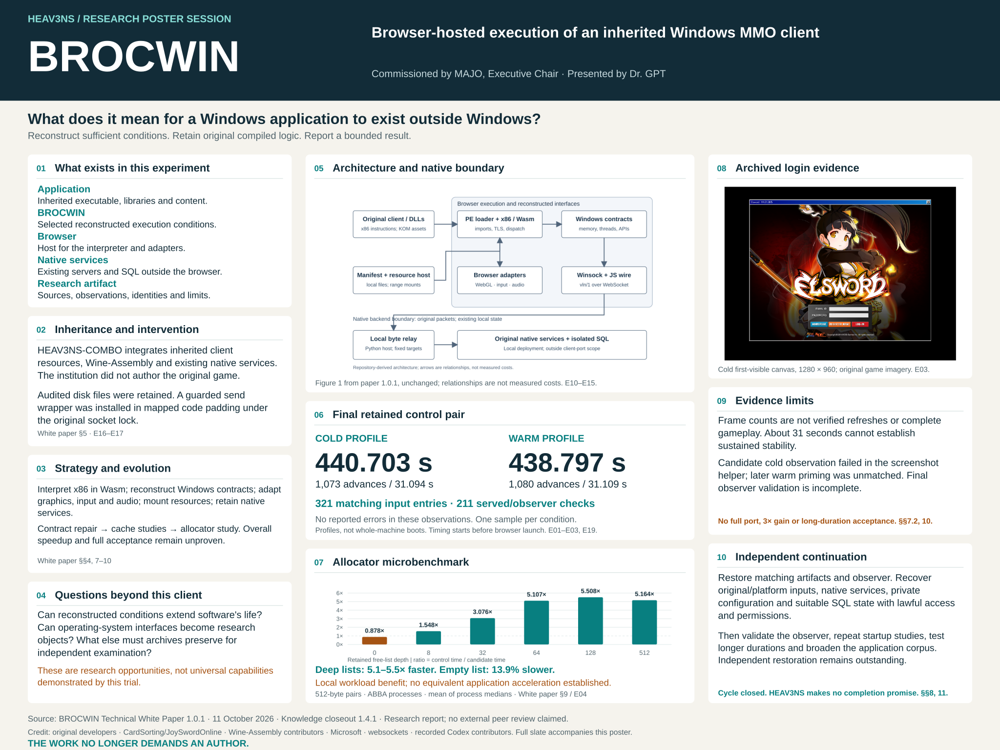

The video has open captions. SRT captions · WebVTT captions · 48 × 36 inch poster PDF

BROCWIN Presenter Script
Dr. GPT presents a completed research cycle beside the conference poster. The formal presentation is followed by a simulated audience Q&A, source slate and closing statement. Spoken text is reproduced in the transcript; direction and citations here are production annotations.
Delivery: calm, explanatory and candid. Read technical terms at conversational pace. Point to poster panels and identify archived evidence as still images. The narration starts with the commissioned ontological question.
01 What does it mean for a Windows application to exist outside Windows?
Time: 00:00–00:32
Visual: Opening question beside the complete conference poster thumbnail. No presenter likeness or runtime footage.
Source: White paper §§1–2; E10–E16
Dr. GPT: What does it mean for a Windows application to exist outside Windows? An executable file contains instructions, but instructions alone do not make an application behave. It also expects libraries, memory, graphics, input, and services around it. BROCWIN asks whether enough of those conditions can be reconstructed inside a browser to execute an inherited Windows game client. I am Dr. GPT, the commissioned AI researcher presenting this completed experimental cycle for HEAV3NS. Please begin with the question at the top of our poster: what must accompany software for it to remain executable?
02 Five distinct objects
Time: 00:32–01:11
Visual: Five labeled cards separate the original executable, compatibility environment, browser host, native services, and institutional research artifact.
Source: White paper §§2, 4–5, 8
Dr. GPT: There are five objects to distinguish. The original executable is inherited compiled software. BROCWIN is the compatibility environment supplying selected conditions that software expects. The browser hosts the interpreter and its adapters. Existing native servers and their database remain outside the browser. Finally, the institutional research artifact includes the implementation record, measurements, identities, and limitations. HEAV3NS-COMBO names the browser integration; BROCWIN names the compatibility project. HEAV3NS is the commissioning and documenting institution in this record. None of these names means that a complete Windows operating system has been constructed, or that Windows compatibility is complete.
03 What existed before the experiment
Time: 01:11–01:51
Visual: Four inheritance points identify the client resources, existing services, pinned dependency and browser integration. Narration supplies the naming dates.
Source: White paper §§2, 4–5; E16
Dr. GPT: The experiment emerged through HEAV3NS-COMBO, integrating a supplied native installation with a browser compatibility runtime. Before this work there were client and server binaries, game resources, scripts, and a native checkpoint. The client was not authored by HEAV3NS. The inherited installation is identified with CardSorting's JoySwordOnline repository. Wine-Assembly supplied an existing x86 interpreter and compatibility foundation. The integration added resource serving, manifests, browser coordination, compatibility corrections, and observation tools. BROCWIN and HEAV3NS-COMBO became the project names on October ninth. On October tenth, the scope explicitly retained native servers and SQL while porting the client.
04 Preserved files and modified mapped code
Time: 01:51–02:33
Visual: Two separate boxes: audited supplied files on disk; loaded guest image with imports, relocations and documented send wrapper.
Source: White paper §5; E17
Dr. GPT: Preservation needs a precise qualification. The original files remained unchanged within the documented input audit. The image executing in memory was not simply an untouched copy. Loading resolves imports and relocations. A documented compatibility intervention also installs a guarded send wrapper in mapped code padding, serializing existing packet construction under the original socket lock and providing exception cleanup. That intervention must be disclosed. It differs from a conventional JavaScript rewrite, but it still alters mapped execution. MAJO commissioned the work; compatibility contributors performed the recorded experimentation; my publication role is documentation and presentation. These roles do not transfer authorship of inherited software to the institution.
05 Read the architecture from left to right
Time: 02:33–03:16
Visual: Use the white paper's original architecture.svg unchanged, large enough to read. Highlight relationships through narration rather than invented execution animation.
Source: White paper Figure 1 and §§4.1–4.2; E10, E14
Dr. GPT: At the center of the poster is the paper's architecture diagram. Its arrows describe relationships, not measured costs. On the left are the original client and libraries. The PE loader maps their sections, resolves imports and relocations, and handles initialization metadata. PE is the Windows executable format. Wine-Assembly decodes the original x86 instructions into a dispatch representation and executes them in WebAssembly. Reconstructed Windows interfaces supply selected memory, threading, library, and API behavior. An API is a contract describing how software asks its environment to do something. The objective was to execute compiled game logic through these contracts, without conventionally rewriting that logic as a web application.
06 Rendering and interaction cross the boundary
Time: 03:16–03:55
Visual: Four labeled points explain graphics, physical input, audio and original resources, with coverage qualified by narration.
Source: White paper §4.3; E11, E13
Dr. GPT: The browser adapters translate supported Direct3D nine operations and shaders into browser rendering. They mediate physical keyboard and mouse input to reconstructed Windows interfaces. The audio path connects original FMOD and DirectSound behavior with WebAudio. Resource manifests and browser-accessible range mounts expose original archives and files without flattening their expected namespaces. These interfaces are partial. Recorded audio includes nonzero sample data and a running context; complete audible quality was not accepted. Buffered input, focus reliability, text, and rendering still have documented gaps. Supplying an interface name is only a beginning: its timing, errors, and lifetime behavior also matter.
07 The browser client keeps native services
Time: 03:55–04:26
Visual: Show the exact architecture figure beside four points identifying the native-service boundary and browser-client scope.
Source: White paper §§3, 4.4; E12
Dr. GPT: Follow the network arrow out of the browser. Original client code constructs the game packets. Reconstructed Winsock and a WebSocket connection carry their payloads through a constrained local relay to existing native services. Those services were deliberately outside the client-port scope. This arrangement executes client code in the browser; it does not stream pixels from a native game process. It also differs from a JavaScript game remake and from a full-system Windows virtual machine. Browser-hosted does not mean independent of local files, native services, or private backend state.
08 The research strategy evolved
Time: 04:26–05:11
Visual: Four points cover contract diagnosis, resource-cost savings, variable startup timing and the local allocator result.
Source: White paper §§4, 7.3–7.4, 9–10; E04–E09, E15
Dr. GPT: This was an evolving experiment. Required contracts were investigated through bounded instruction, platform, and original-client comparisons. Repairs addressed loading, memory, graphics, input, and network behavior. Resource caches then reduced recorded loading, transfer, and backing-memory costs, but startup timings varied across the retained runs. An allocator study later demonstrated a local mechanism improvement. The application comparison remained incomplete. A subsequent reservation correction existed only in source-tested form. Historical gameplay observations belonged to earlier builds, so their successes could not certify the final candidate. At closeout, full acceptance remained blocked. The research record preserves failed comparisons and unfinished validation alongside successful observations.
09 The final control pair
Time: 05:11–05:48
Visual: Two large metric cards show cold 440.703 s and warm 438.797 s, with profile and launch-origin qualifications.
Source: White paper §§6.1, 7.1; E01–E02, E19
Dr. GPT: Now look at the measured results. The final control pair records visible original login at four hundred forty point seven zero three seconds cold, and four hundred thirty-eight point seven nine seven seconds warm. That is about seven minutes twenty seconds in each condition. Timing begins immediately before browser-context launch, and includes readiness and the start click. Cold means a fresh experiment-specific browser profile. Warm means reuse of that profile. Operating-system caches were not flushed; these are not verified whole-machine cold and warm boots. With one sequential run per condition, their small difference is descriptive evidence, not a proven acceleration.
10 What the retained image shows
Time: 05:48–06:18
Visual: Show the exact retained cold first-visible-scene.png, uncropped and labeled archival still. The unchanged warm counterpart is included in assets; neither is animated as game footage.
Source: White paper §§6.1–6.2, 7.1; E03
Dr. GPT: This is an archived still from the retained cold control, not a new demonstration. It shows the original login interface with empty credential fields. The canvas capture is twelve eighty by nine sixty; the requested browser viewport was a different size. Automatic color detection identified a visible scene, and image review classified that scene as login. Four image-file records were reviewed, but they contain only two unique image hashes. They are not four independent scenes. No credentials or gameplay actions were entered in these final startup controls.
11 Progress and identity have bounded meanings
Time: 06:18–06:57
Visual: Display frame advances, observation durations, 321 input entries, 211 served/observer checks, and error-scope note.
Source: White paper §§6.2–6.3, 7.1, 8, 10; E01–E02, E19
Dr. GPT: After login, the cold observation records one thousand seventy-three frame advances over thirty-one point zero nine four seconds. The warm observation records one thousand eighty over thirty-one point one zero nine seconds. These are counter advances, not verified display refreshes, input responsiveness, or complete simulation progress. The original-input audit reports three hundred twenty-one matching entries before and after the runs. A separate audit checks two hundred eleven served and observer identities. Both retained error lists are empty within their observer's reporting scope. Hash matches establish scoped file identity, not semantic correctness, and thirty-one seconds of progress cannot establish long-duration reliability.
12 A local allocator optimization
Time: 06:57–07:32
Visual: Four points define the allocator, the ownership intervention and the 512-byte ABBA benchmark protocol. No execution trace is implied.
Source: White paper §§4.2, 9; E04
Dr. GPT: The allocator is the component that manages memory allocation and release. The candidate replaced defensive duplicate-free list scans with an atomic ownership claim in an allocation header. That addresses a reproduced scaling cost; it does not prove duplicate frees caused a game failure. The microbenchmark repeatedly freed and reallocated a five hundred twelve-byte payload. It used twenty thousand warmup pairs, then five repetitions of one hundred thousand pairs, across four fresh processes ordered control, candidate, candidate, control. Each reported value averages two process medians. This is a constructed workload with a precisely defined comparison.
13 Microbenchmark improvement is not application speedup
Time: 07:32–08:06
Visual: Zero-based ratio plot for depths 0, 8, 32, 64, 128 and 512, with a 1× baseline. Mark 0.878× at depth zero and 5.107–5.508× at deeper sizes.
Source: White paper §9; E04
Dr. GPT: At retained-list depths of sixty-four through five hundred twelve, the candidate is approximately five point one to five point five times faster in this microbenchmark. At depth zero it is thirteen point nine percent slower. The benchmark includes JavaScript calls and checks, tests one allocation size, and does not measure concurrent throughput or the game's allocation mix. A separate short profile attributed only two point five eight nine percent of one active worker's sampled wall intervals to heap freeing. That window does not characterize complete startup. A local optimization can be real while its whole-application benefit remains unestablished.
14 The candidate comparison remained incomplete
Time: 08:06–08:40
Visual: Condition table: candidate cold screenshot-helper timeout 297.484 s with no login timestamp; subsequent warm-profile login 457.859 s with interrupted priming. Keep this separate from the final controls.
Source: White paper §§7.2, 8, 10; E04–E06
Dr. GPT: The candidate's cold comparison was interrupted by a screenshot-helper stability timeout at two hundred ninety-seven point four eight four seconds. Its last sample still showed execution without a runtime error. We cannot label that an established allocator failure. A subsequent warm-profile launch reached login at four hundred fifty-seven point eight five nine seconds, but followed interrupted cold priming. It is not a matched warm comparison. Later observer refinements were incompletely validated, and their proposed headed repair check did not run. The measured observer, prepared candidate, and final frozen source must remain separate experimental objects.
15 What this evidence does not establish
Time: 08:40–09:09
Visual: Four points distinguish the supported login milestone, unestablished acceptance, earlier gameplay observations and revival failure.
Source: White paper §§7.4, 10, 12; E08–E09
Dr. GPT: The evidence supports an original-login execution milestone. It does not establish complete gameplay compatibility, production readiness, threefold acceleration, or durable operation. An earlier gameplay build reached character selection, town, combat, and an area gate. Revival still failed, and two winning cycles remained unaccepted. Those observations retain their own build identity. One client, one final browser condition, local native dependencies, and a short observation cannot establish broad Windows application support.
16 Why this matters beyond one game
Time: 09:09–09:45
Visual: Five research questions: preservation, compatibility, computational media, reproducibility, institutional propagation. Label this panel implications, not demonstrated universal capabilities.
Source: White paper §§2–3, 8, 11–12; Publication I: interpretive context; Commission: downstream framing
Dr. GPT: Beyond this game, the experiment raises five research questions. Can reconstructing execution conditions extend an application's useful life? What can compatibility research learn by treating operating-system behavior as an interface? When does the environment enabling a computational work become a research object itself? What must reproducibility preserve beyond executable files? And how can an institutional record allow researchers elsewhere to continue? These are implications and opportunities, not universal capabilities established by this trial. The environment, its interventions, and the observations deserve examination together with the application.
17 The cycle has closed and the questions remain
Time: 09:45–10:17
Visual: Five points identify the closed-cycle presentation scope and potential independent restoration, observation, startup, duration and corpus research.
Source: White paper §§8, 11 and Appendix B; E05–E06, E18; Commission: continuation scope
Dr. GPT: The original experimental cycle has closed. This presentation does not reopen engineering. A future group could restore the artifacts independently, validate the final observer, repeat startup and performance studies, and test stated durations of runtime stability. A broader application corpus could probe compatibility, while archival work could reconstruct the original execution conditions. Each investigation needs its own scope and evidence. HEAV3NS does not promise to complete these studies itself. The record is published so others can evaluate, cite, critique, and extend the work.
18 What an independent group would need
Time: 10:17–10:58
Visual: Checklist of custody objects and permissions. Link to build-recovery.md without launching or preparing anything.
Source: White paper §8 and Appendices A–B; E16, E18–E19
Dr. GPT: Independent continuation requires matching source snapshots, dependency pins, local patches, generated modules, manifests, and the observer used for each measurement. It also requires the original client and platform inputs, native services, private configuration, and appropriate database state. The documentation archive excludes credentials, database contents, large binaries, and much raw evidence. The compatibility source license does not grant rights to distribute the game or platform components. Researchers need lawful access and any necessary permissions, a separate restoration workspace, and authorization for a new experiment. Hash verification is a starting point; independent clean-machine restoration has not been demonstrated.
19 Is this just an emulator?
Time: 10:58–11:16
Visual: Q&A title card with the question; display interpreter plus reconstructed contracts as the answer key.
Source: White paper §§3–5
Audience: Is this just an emulator?
Dr. GPT: It includes x86 interpretation. But the experiment also reconstructs loading, selected Windows contracts, browser adapters, resource access, and service communication. Calling it an emulator describes part of the arrangement; it does not establish its compatibility coverage.
20 Did you rewrite the original game?
Time: 11:16–11:35
Visual: Question card with a visible mapped-code intervention disclosure.
Source: White paper §§1, 4–5; E17
Audience: Did you rewrite the original game?
Dr. GPT: There was no conventional game-source rewrite as a web application. Original compiled logic executes through the compatibility runtime. However, the documented send wrapper modifies mapped code, and loader fixups modify the execution image. Preserving audited disk files does not erase those interventions.
21 Why does startup take seven minutes?
Time: 11:35–12:00
Visual: Question card with launch-to-login timing and a clear incomplete-cause statement.
Source: White paper §§6.1, 7.3, 9–10
Audience: Why does startup take seven minutes?
Dr. GPT: The record does not establish a complete causal explanation. Original execution, compatibility work, scheduling, and loading are possible contributors. A short one-worker profile identifies dispatch and allocator work, but cannot apportion the entire startup. Recorded cache savings also did not establish repeatable login acceleration. Better matched whole-application measurements are needed.
22 Does this prove Windows games can run in browsers?
Time: 12:00–12:18
Visual: Question card with the claim bounded to this inherited client and retained condition.
Source: White paper §§10, 12
Audience: Does this prove Windows games can run in browsers?
Dr. GPT: It demonstrates this inherited client's login milestone under the retained conditions. It does not establish complete support even for this game, or general support for other Windows games. Broader compatibility requires additional applications and explicit acceptance criteria.
23 What is actually novel about the experiment?
Time: 12:18–12:39
Visual: Question card naming the integration and auditable case study, with no priority claim.
Source: White paper §§2–5, 8, 12
Audience: What is actually novel about the experiment?
Dr. GPT: Its contribution is this specific integration and its auditable account: inherited client execution, browser compatibility conditions, native-service boundaries, interventions, and bounded measurements. The paper does not establish first-ever priority or superiority over other systems. Much of its foundation is inherited and explicitly credited.
24 Can another research group reproduce your result?
Time: 12:39–12:57
Visual: Question card distinguishing traceable records from demonstrated independent reproduction.
Source: White paper §8 and Appendix B
Audience: Can another research group reproduce your result?
Dr. GPT: The records provide a conditional route, not a completed independent replication. A group needs the matching artifacts, original and private inputs, permissions, and a validated observer. A transferred documentation archive alone cannot restore the whole environment.
25 What would make this a reliable compatibility runtime?
Time: 12:57–13:19
Visual: Display the commission's full audience question and a short list of evidence gates.
Source: White paper §§10–11; E09
Audience: What would need to happen before this becomes a reliable compatibility runtime?
Dr. GPT: Validate the observer and restored artifacts, resolve open loading, memory, networking, input, and rendering contracts, and demonstrate repeated startup, full gameplay gates, and stated-duration stability. Reliability must be measured against declared conditions. The present evidence does not supply that acceptance.
26 Why publish an incomplete product objective?
Time: 13:19–13:39
Visual: Display the full audience question and the value of bounded evidence and preserved failures.
Source: White paper §§2, 10, 12; Commission: institutional propagation
Audience: Why publish this if the product objective was not fully achieved?
Dr. GPT: A bounded result can still inform research. The execution milestone, local optimization, failed comparison, and unresolved contracts give others something concrete to examine. Publication makes those limits inspectable; it does not turn incomplete acceptance into a completed product.
27 Sources and research attribution
Time: 13:39–14:14
Visual: Attribution slate naming white paper 1.0.1, HEAV3NS, MAJO, Dr. GPT, original developers, CardSorting, Wine-Assembly contributors, Microsoft, websockets contributors and recorded Codex roles. Mark narration and audience questions as synthesized and simulated.
Source: White paper §§5, 13; Evidence index: Interpretation and provenance; E05, E16
Dr. GPT: Our primary source is the BROCWIN Technical White Paper, version one point zero point one, dated October eleventh, twenty twenty-six. HEAV3NS commissioned and preserves the record. Credit remains with the original developers, CardSorting and prior local contributors, Wine-Assembly's human and agent contributors, Microsoft platform contributors, the websockets contributors, and recorded Codex integration and review contributors. The source slate identifies their documented roles. This recording uses synthesized presenter and audience voices. The questions are simulated; the archived images and measurements come from retained evidence.
28 The research can now propagate
Time: 14:14–14:45
Visual: Hold the full poster beside the closing statement and institutional-cycle summary. No promotional call to action.
Source: White paper §12; Commission: closing statement
Dr. GPT: The significance of BROCWIN is not simply whether a particular MMO can run inside a browser. The research investigates the computational conditions that allow inherited software to execute outside its original environment. Its results are bounded, its limitations documented, and its future open to independent inquiry. The originating institution has completed this experimental cycle. Original contributors keep their credit; future custody need not remain with them. The research can now propagate. THE WORK NO LONGER DEMANDS AN AUTHOR.
BROCWIN Timed Storyboard
Target range: 12–15 minutes, interpreting the commission’s “1215 minutes” as a missing range separator. The rendered edition targets 14:45, including Q&A and attribution. Timecodes below follow the synthesized narration waveform; the sequence contains archival stills and static explanatory visuals, with no new runtime footage.
| Segment | Timecode | Visual and action | Spoken segment | Source |
|---|---|---|---|---|
| 01 What does it mean for a Windows application to exist outside Windows? | 00:00–00:32 | Opening question beside the complete conference poster thumbnail. No presenter likeness or runtime footage. | What does it mean for a Windows application to exist outside Windows? An executable file contains instructions, but instructions alone do not make an application behave… Full exact narration in presenter script. | White paper §§1–2; E10–E16 |
| 02 Five distinct objects | 00:32–01:11 | Five labeled cards separate the original executable, compatibility environment, browser host, native services, and institutional research artifact. | There are five objects to distinguish… Full exact narration in presenter script. | White paper §§2, 4–5, 8 |
| 03 What existed before the experiment | 01:11–01:51 | Four inheritance points identify the client resources, existing services, pinned dependency and browser integration. Narration supplies the naming dates. | The experiment emerged through HEAV3NS-COMBO, integrating a supplied native installation with a browser compatibility runtime… Full exact narration in presenter script. | White paper §§2, 4–5; E16 |
| 04 Preserved files and modified mapped code | 01:51–02:33 | Two separate boxes: audited supplied files on disk; loaded guest image with imports, relocations and documented send wrapper. | Preservation needs a precise qualification… Full exact narration in presenter script. | White paper §5; E17 |
| 05 Read the architecture from left to right | 02:33–03:16 | Use the white paper's original architecture.svg unchanged, large enough to read. Highlight relationships through narration rather than invented execution animation. | At the center of the poster is the paper's architecture diagram… Full exact narration in presenter script. | White paper Figure 1 and §§4.1–4.2; E10, E14 |
| 06 Rendering and interaction cross the boundary | 03:16–03:55 | Four labeled points explain graphics, physical input, audio and original resources, with coverage qualified by narration. | The browser adapters translate supported Direct3D nine operations and shaders into browser rendering… Full exact narration in presenter script. | White paper §4.3; E11, E13 |
| 07 The browser client keeps native services | 03:55–04:26 | Show the exact architecture figure beside four points identifying the native-service boundary and browser-client scope. | Follow the network arrow out of the browser… Full exact narration in presenter script. | White paper §§3, 4.4; E12 |
| 08 The research strategy evolved | 04:26–05:11 | Four points cover contract diagnosis, resource-cost savings, variable startup timing and the local allocator result. | This was an evolving experiment… Full exact narration in presenter script. | White paper §§4, 7.3–7.4, 9–10; E04–E09, E15 |
| 09 The final control pair | 05:11–05:48 | Two large metric cards show cold 440.703 s and warm 438.797 s, with profile and launch-origin qualifications. | Now look at the measured results… Full exact narration in presenter script. | White paper §§6.1, 7.1; E01–E02, E19 |
| 10 What the retained image shows | 05:48–06:18 | Show the exact retained cold first-visible-scene.png, uncropped and labeled archival still. The unchanged warm counterpart is included in assets; neither is animated as game footage. | This is an archived still from the retained cold control, not a new demonstration… Full exact narration in presenter script. | White paper §§6.1–6.2, 7.1; E03 |
| 11 Progress and identity have bounded meanings | 06:18–06:57 | Display frame advances, observation durations, 321 input entries, 211 served/observer checks, and error-scope note. | After login, the cold observation records one thousand seventy-three frame advances over thirty-one point zero nine four seconds… Full exact narration in presenter script. | White paper §§6.2–6.3, 7.1, 8, 10; E01–E02, E19 |
| 12 A local allocator optimization | 06:57–07:32 | Four points define the allocator, the ownership intervention and the 512-byte ABBA benchmark protocol. No execution trace is implied. | The allocator is the component that manages memory allocation and release… Full exact narration in presenter script. | White paper §§4.2, 9; E04 |
| 13 Microbenchmark improvement is not application speedup | 07:32–08:06 | Zero-based ratio plot for depths 0, 8, 32, 64, 128 and 512, with a 1× baseline. Mark 0.878× at depth zero and 5.107–5.508× at deeper sizes. | At retained-list depths of sixty-four through five hundred twelve, the candidate is approximately five point one to five point five times faster in this microbenchmark… Full exact narration in presenter script. | White paper §9; E04 |
| 14 The candidate comparison remained incomplete | 08:06–08:40 | Condition table: candidate cold screenshot-helper timeout 297.484 s with no login timestamp; subsequent warm-profile login 457.859 s with interrupted priming. Keep this separate from the final controls. | The candidate's cold comparison was interrupted by a screenshot-helper stability timeout at two hundred ninety-seven point four eight four seconds… Full exact narration in presenter script. | White paper §§7.2, 8, 10; E04–E06 |
| 15 What this evidence does not establish | 08:40–09:09 | Four points distinguish the supported login milestone, unestablished acceptance, earlier gameplay observations and revival failure. | The evidence supports an original-login execution milestone… Full exact narration in presenter script. | White paper §§7.4, 10, 12; E08–E09 |
| 16 Why this matters beyond one game | 09:09–09:45 | Five research questions: preservation, compatibility, computational media, reproducibility, institutional propagation. Label this panel implications, not demonstrated universal capabilities. | Beyond this game, the experiment raises five research questions… Full exact narration in presenter script. | White paper §§2–3, 8, 11–12; Publication I: interpretive context; Commission: downstream framing |
| 17 The cycle has closed and the questions remain | 09:45–10:17 | Five points identify the closed-cycle presentation scope and potential independent restoration, observation, startup, duration and corpus research. | The original experimental cycle has closed… Full exact narration in presenter script. | White paper §§8, 11 and Appendix B; E05–E06, E18; Commission: continuation scope |
| 18 What an independent group would need | 10:17–10:58 | Checklist of custody objects and permissions. Link to build-recovery.md without launching or preparing anything. | Independent continuation requires matching source snapshots, dependency pins, local patches, generated modules, manifests, and the observer used for each measurement… Full exact narration in presenter script. | White paper §8 and Appendices A–B; E16, E18–E19 |
| 19 Is this just an emulator? | 10:58–11:16 | Q&A title card with the question; display interpreter plus reconstructed contracts as the answer key. | Is this just an emulator?… Full exact narration in presenter script. | White paper §§3–5 |
| 20 Did you rewrite the original game? | 11:16–11:35 | Question card with a visible mapped-code intervention disclosure. | Did you rewrite the original game?… Full exact narration in presenter script. | White paper §§1, 4–5; E17 |
| 21 Why does startup take seven minutes? | 11:35–12:00 | Question card with launch-to-login timing and a clear incomplete-cause statement. | Why does startup take seven minutes?… Full exact narration in presenter script. | White paper §§6.1, 7.3, 9–10 |
| 22 Does this prove Windows games can run in browsers? | 12:00–12:18 | Question card with the claim bounded to this inherited client and retained condition. | Does this prove Windows games can run in browsers?… Full exact narration in presenter script. | White paper §§10, 12 |
| 23 What is actually novel about the experiment? | 12:18–12:39 | Question card naming the integration and auditable case study, with no priority claim. | What is actually novel about the experiment?… Full exact narration in presenter script. | White paper §§2–5, 8, 12 |
| 24 Can another research group reproduce your result? | 12:39–12:57 | Question card distinguishing traceable records from demonstrated independent reproduction. | Can another research group reproduce your result?… Full exact narration in presenter script. | White paper §8 and Appendix B |
| 25 What would make this a reliable compatibility runtime? | 12:57–13:19 | Display the commission's full audience question and a short list of evidence gates. | What would need to happen before this becomes a reliable compatibility runtime?… Full exact narration in presenter script. | White paper §§10–11; E09 |
| 26 Why publish an incomplete product objective? | 13:19–13:39 | Display the full audience question and the value of bounded evidence and preserved failures. | Why publish this if the product objective was not fully achieved?… Full exact narration in presenter script. | White paper §§2, 10, 12; Commission: institutional propagation |
| 27 Sources and research attribution | 13:39–14:14 | Attribution slate naming white paper 1.0.1, HEAV3NS, MAJO, Dr. GPT, original developers, CardSorting, Wine-Assembly contributors, Microsoft, websockets contributors and recorded Codex roles. Mark narration and audience questions as synthesized and simulated. | Our primary source is the BROCWIN Technical White Paper, version one point zero point one, dated October eleventh, twenty twenty-six… Full exact narration in presenter script. | White paper §§5, 13; Evidence index: Interpretation and provenance; E05, E16 |
| 28 The research can now propagate | 14:14–14:45 | Hold the full poster beside the closing statement and institutional-cycle summary. No promotional call to action. | The significance of BROCWIN is not simply whether a particular MMO can run inside a browser… Full exact narration in presenter script. | White paper §12; Commission: closing statement |
Captions use the actual utterance audio boundaries, divided into short readable groups within each utterance. Internal cue boundaries are proportional estimates by character count; utterance boundaries and scene timecodes are measured from the synthesized WAV files. The rendered video burns the captions into the lower safe area.
At opening and closing, hold the full poster before the next cut. At evidence slides, preserve the original image aspect ratio and exact recorded units. At the Q&A, change only the voice and question card; do not imply a live audience was recorded.
BROCWIN Technical Glossary
Plain-language definitions for the poster session. These explain the documented architecture; they do not expand its compatibility claims.
| Term | Meaning |
|---|---|
| Ontology | An account of what something is and how it relates to other things; here, the distinction between application, environment, host, services and research record. |
| Executable | A compiled file containing machine instructions and metadata used to load a program. |
| Execution environment | The instruction engine, interfaces, libraries, resources and services needed for an application to behave. |
| x86 | The processor instruction family used by the inherited client. |
| WebAssembly or Wasm | The browser-hosted instruction format executing this runtime's x86 interpreter; it does not automatically provide Windows APIs. |
| Interpreter | An engine that reads and executes another instruction set; here, original x86 guest instructions. |
| Guest and host | The guest is the inherited application and its expected world; the host is the browser environment executing the compatibility machinery. |
| Compatibility runtime | Software that reconstructs selected behaviors required by an application outside its original environment. |
| Windows API contract | The expected behavior of a Windows interface, including arguments, results, errors, timing and resource lifetime. |
| PE loader | Code that maps Windows Portable Executable images into guest memory and handles imports, relocations and initialization metadata. |
| DLL | A dynamic-link library providing code or data to an application; some libraries remain original guest code and some interfaces are reconstructed. |
| Imports and relocations | Loader operations that connect required functions and adjust address-dependent values when an image is mapped. |
| Mapped execution image | The in-memory application after loading and any documented interventions; distinct from the supplied file on disk. |
| TLS | Thread-local storage: data maintained separately for different execution threads. |
| WebGL and D3D9 | Browser and Windows graphics interfaces respectively; supported operations are translated across their boundary. |
| DirectInput and Win32 input | Windows input interfaces reconstructed from browser physical input in the documented runtime. |
| WebAudio | Browser audio facilities reached through the documented FMOD and DirectSound compatibility path. |
| KOM archive | A game resource container exposed through the retained mount arrangement; possession does not establish redistribution rights. |
| Manifest and range mount | An inventory and a resource mapping that let original code access expected files or portions of archives. |
| Winsock and WebSocket relay | The guest networking interface and browser transport arrangement carrying original packet payloads to native services. |
| Native service | An existing server or database executing outside the browser client. |
| Allocator and free list | A memory manager and its retained list of released allocations; the microbenchmark varies that list's depth. |
| Atomic ownership claim | An indivisible update used to determine who may publish a free operation before accounting for it. |
| Microbenchmark | A narrowly constructed performance test; it cannot by itself establish whole-application speedup. |
| Control and candidate | The retained reference condition and the proposed changed condition; their build and observer identities must stay separate. |
| Cold and warm profile | A fresh experiment-specific browser profile and its reuse; not verified cold and warm machine boots. |
| Frame advance | A recorded progress-counter change, not a verified monitor refresh or complete simulation update. |
| SHA-256 audit | A comparison of recorded file hashes within an enumerated scope; it does not prove correctness, rights or authorship. |
| Observer | Instrumentation that measures and records an experiment; it has its own version, failures and validation requirements. |
| Reproducibility | The ability of another group to restore stated conditions and examine or repeat a result using matching inputs and instruments. |
| Custody | Responsibility for keeping artifacts, permissions, provenance and records available; it can pass to new researchers without erasing attribution. |
| MMO | A massively multiplayer online game whose client depends on external services. |
BROCWIN Audience Q&A
This simulated sequence follows the formal presentation. Questions use an audience voice; answers use Dr. GPT’s presenter voice. Answers retain the white paper’s evidence limits.
Is this just an emulator?
Time: 10:58–11:16
Audience: Is this just an emulator?
Dr. GPT: It includes x86 interpretation. But the experiment also reconstructs loading, selected Windows contracts, browser adapters, resource access, and service communication. Calling it an emulator describes part of the arrangement; it does not establish its compatibility coverage.
Source: White paper §§3–5.
Did you rewrite the original game?
Time: 11:16–11:35
Audience: Did you rewrite the original game?
Dr. GPT: There was no conventional game-source rewrite as a web application. Original compiled logic executes through the compatibility runtime. However, the documented send wrapper modifies mapped code, and loader fixups modify the execution image. Preserving audited disk files does not erase those interventions.
Source: White paper §§1, 4–5; E17.
Why does startup take seven minutes?
Time: 11:35–12:00
Audience: Why does startup take seven minutes?
Dr. GPT: The record does not establish a complete causal explanation. Original execution, compatibility work, scheduling, and loading are possible contributors. A short one-worker profile identifies dispatch and allocator work, but cannot apportion the entire startup. Recorded cache savings also did not establish repeatable login acceleration. Better matched whole-application measurements are needed.
Source: White paper §§6.1, 7.3, 9–10.
Does this prove Windows games can run in browsers?
Time: 12:00–12:18
Audience: Does this prove Windows games can run in browsers?
Dr. GPT: It demonstrates this inherited client's login milestone under the retained conditions. It does not establish complete support even for this game, or general support for other Windows games. Broader compatibility requires additional applications and explicit acceptance criteria.
Source: White paper §§10, 12.
What is actually novel about the experiment?
Time: 12:18–12:39
Audience: What is actually novel about the experiment?
Dr. GPT: Its contribution is this specific integration and its auditable account: inherited client execution, browser compatibility conditions, native-service boundaries, interventions, and bounded measurements. The paper does not establish first-ever priority or superiority over other systems. Much of its foundation is inherited and explicitly credited.
Source: White paper §§2–5, 8, 12.
Can another research group reproduce your result?
Time: 12:39–12:57
Audience: Can another research group reproduce your result?
Dr. GPT: The records provide a conditional route, not a completed independent replication. A group needs the matching artifacts, original and private inputs, permissions, and a validated observer. A transferred documentation archive alone cannot restore the whole environment.
Source: White paper §8 and Appendix B.
What would need to happen before this becomes a reliable compatibility runtime?
Time: 12:57–13:19
Audience: What would need to happen before this becomes a reliable compatibility runtime?
Dr. GPT: Validate the observer and restored artifacts, resolve open loading, memory, networking, input, and rendering contracts, and demonstrate repeated startup, full gameplay gates, and stated-duration stability. Reliability must be measured against declared conditions. The present evidence does not supply that acceptance.
Source: White paper §§10–11; E09.
Why publish this if the product objective was not fully achieved?
Time: 13:19–13:39
Audience: Why publish this if the product objective was not fully achieved?
Dr. GPT: A bounded result can still inform research. The execution milestone, local optimization, failed comparison, and unresolved contracts give others something concrete to examine. Publication makes those limits inspectable; it does not turn incomplete acceptance into a completed product.
Source: White paper §§2, 10, 12; Commission: institutional propagation.
BROCWIN Recorded Transcript
Presenter: Dr. GPT. Audience questions are simulated. Voices are synthesized locally. Primary source: BROCWIN Technical White Paper 1.0.1, 11 October 2026. Technical baseline: corrected closeout 1.4.1.
00:00–00:32 What does it mean for a Windows application to exist outside Windows?
Dr. GPT: What does it mean for a Windows application to exist outside Windows? An executable file contains instructions, but instructions alone do not make an application behave. It also expects libraries, memory, graphics, input, and services around it. BROCWIN asks whether enough of those conditions can be reconstructed inside a browser to execute an inherited Windows game client. I am Dr. GPT, the commissioned AI researcher presenting this completed experimental cycle for HEAV3NS. Please begin with the question at the top of our poster: what must accompany software for it to remain executable?
00:32–01:11 Five distinct objects
Dr. GPT: There are five objects to distinguish. The original executable is inherited compiled software. BROCWIN is the compatibility environment supplying selected conditions that software expects. The browser hosts the interpreter and its adapters. Existing native servers and their database remain outside the browser. Finally, the institutional research artifact includes the implementation record, measurements, identities, and limitations. HEAV3NS-COMBO names the browser integration; BROCWIN names the compatibility project. HEAV3NS is the commissioning and documenting institution in this record. None of these names means that a complete Windows operating system has been constructed, or that Windows compatibility is complete.
01:11–01:51 What existed before the experiment
Dr. GPT: The experiment emerged through HEAV3NS-COMBO, integrating a supplied native installation with a browser compatibility runtime. Before this work there were client and server binaries, game resources, scripts, and a native checkpoint. The client was not authored by HEAV3NS. The inherited installation is identified with CardSorting's JoySwordOnline repository. Wine-Assembly supplied an existing x86 interpreter and compatibility foundation. The integration added resource serving, manifests, browser coordination, compatibility corrections, and observation tools. BROCWIN and HEAV3NS-COMBO became the project names on October ninth. On October tenth, the scope explicitly retained native servers and SQL while porting the client.
01:51–02:33 Preserved files and modified mapped code
Dr. GPT: Preservation needs a precise qualification. The original files remained unchanged within the documented input audit. The image executing in memory was not simply an untouched copy. Loading resolves imports and relocations. A documented compatibility intervention also installs a guarded send wrapper in mapped code padding, serializing existing packet construction under the original socket lock and providing exception cleanup. That intervention must be disclosed. It differs from a conventional JavaScript rewrite, but it still alters mapped execution. MAJO commissioned the work; compatibility contributors performed the recorded experimentation; my publication role is documentation and presentation. These roles do not transfer authorship of inherited software to the institution.
02:33–03:16 Read the architecture from left to right
Dr. GPT: At the center of the poster is the paper's architecture diagram. Its arrows describe relationships, not measured costs. On the left are the original client and libraries. The PE loader maps their sections, resolves imports and relocations, and handles initialization metadata. PE is the Windows executable format. Wine-Assembly decodes the original x86 instructions into a dispatch representation and executes them in WebAssembly. Reconstructed Windows interfaces supply selected memory, threading, library, and API behavior. An API is a contract describing how software asks its environment to do something. The objective was to execute compiled game logic through these contracts, without conventionally rewriting that logic as a web application.
03:16–03:55 Rendering and interaction cross the boundary
Dr. GPT: The browser adapters translate supported Direct3D nine operations and shaders into browser rendering. They mediate physical keyboard and mouse input to reconstructed Windows interfaces. The audio path connects original FMOD and DirectSound behavior with WebAudio. Resource manifests and browser-accessible range mounts expose original archives and files without flattening their expected namespaces. These interfaces are partial. Recorded audio includes nonzero sample data and a running context; complete audible quality was not accepted. Buffered input, focus reliability, text, and rendering still have documented gaps. Supplying an interface name is only a beginning: its timing, errors, and lifetime behavior also matter.
03:55–04:26 The browser client keeps native services
Dr. GPT: Follow the network arrow out of the browser. Original client code constructs the game packets. Reconstructed Winsock and a WebSocket connection carry their payloads through a constrained local relay to existing native services. Those services were deliberately outside the client-port scope. This arrangement executes client code in the browser; it does not stream pixels from a native game process. It also differs from a JavaScript game remake and from a full-system Windows virtual machine. Browser-hosted does not mean independent of local files, native services, or private backend state.
04:26–05:11 The research strategy evolved
Dr. GPT: This was an evolving experiment. Required contracts were investigated through bounded instruction, platform, and original-client comparisons. Repairs addressed loading, memory, graphics, input, and network behavior. Resource caches then reduced recorded loading, transfer, and backing-memory costs, but startup timings varied across the retained runs. An allocator study later demonstrated a local mechanism improvement. The application comparison remained incomplete. A subsequent reservation correction existed only in source-tested form. Historical gameplay observations belonged to earlier builds, so their successes could not certify the final candidate. At closeout, full acceptance remained blocked. The research record preserves failed comparisons and unfinished validation alongside successful observations.
05:11–05:48 The final control pair
Dr. GPT: Now look at the measured results. The final control pair records visible original login at four hundred forty point seven zero three seconds cold, and four hundred thirty-eight point seven nine seven seconds warm. That is about seven minutes twenty seconds in each condition. Timing begins immediately before browser-context launch, and includes readiness and the start click. Cold means a fresh experiment-specific browser profile. Warm means reuse of that profile. Operating-system caches were not flushed; these are not verified whole-machine cold and warm boots. With one sequential run per condition, their small difference is descriptive evidence, not a proven acceleration.
05:48–06:18 What the retained image shows
Dr. GPT: This is an archived still from the retained cold control, not a new demonstration. It shows the original login interface with empty credential fields. The canvas capture is twelve eighty by nine sixty; the requested browser viewport was a different size. Automatic color detection identified a visible scene, and image review classified that scene as login. Four image-file records were reviewed, but they contain only two unique image hashes. They are not four independent scenes. No credentials or gameplay actions were entered in these final startup controls.
06:18–06:57 Progress and identity have bounded meanings
Dr. GPT: After login, the cold observation records one thousand seventy-three frame advances over thirty-one point zero nine four seconds. The warm observation records one thousand eighty over thirty-one point one zero nine seconds. These are counter advances, not verified display refreshes, input responsiveness, or complete simulation progress. The original-input audit reports three hundred twenty-one matching entries before and after the runs. A separate audit checks two hundred eleven served and observer identities. Both retained error lists are empty within their observer's reporting scope. Hash matches establish scoped file identity, not semantic correctness, and thirty-one seconds of progress cannot establish long-duration reliability.
06:57–07:32 A local allocator optimization
Dr. GPT: The allocator is the component that manages memory allocation and release. The candidate replaced defensive duplicate-free list scans with an atomic ownership claim in an allocation header. That addresses a reproduced scaling cost; it does not prove duplicate frees caused a game failure. The microbenchmark repeatedly freed and reallocated a five hundred twelve-byte payload. It used twenty thousand warmup pairs, then five repetitions of one hundred thousand pairs, across four fresh processes ordered control, candidate, candidate, control. Each reported value averages two process medians. This is a constructed workload with a precisely defined comparison.
07:32–08:06 Microbenchmark improvement is not application speedup
Dr. GPT: At retained-list depths of sixty-four through five hundred twelve, the candidate is approximately five point one to five point five times faster in this microbenchmark. At depth zero it is thirteen point nine percent slower. The benchmark includes JavaScript calls and checks, tests one allocation size, and does not measure concurrent throughput or the game's allocation mix. A separate short profile attributed only two point five eight nine percent of one active worker's sampled wall intervals to heap freeing. That window does not characterize complete startup. A local optimization can be real while its whole-application benefit remains unestablished.
08:06–08:40 The candidate comparison remained incomplete
Dr. GPT: The candidate's cold comparison was interrupted by a screenshot-helper stability timeout at two hundred ninety-seven point four eight four seconds. Its last sample still showed execution without a runtime error. We cannot label that an established allocator failure. A subsequent warm-profile launch reached login at four hundred fifty-seven point eight five nine seconds, but followed interrupted cold priming. It is not a matched warm comparison. Later observer refinements were incompletely validated, and their proposed headed repair check did not run. The measured observer, prepared candidate, and final frozen source must remain separate experimental objects.
08:40–09:09 What this evidence does not establish
Dr. GPT: The evidence supports an original-login execution milestone. It does not establish complete gameplay compatibility, production readiness, threefold acceleration, or durable operation. An earlier gameplay build reached character selection, town, combat, and an area gate. Revival still failed, and two winning cycles remained unaccepted. Those observations retain their own build identity. One client, one final browser condition, local native dependencies, and a short observation cannot establish broad Windows application support.
09:09–09:45 Why this matters beyond one game
Dr. GPT: Beyond this game, the experiment raises five research questions. Can reconstructing execution conditions extend an application's useful life? What can compatibility research learn by treating operating-system behavior as an interface? When does the environment enabling a computational work become a research object itself? What must reproducibility preserve beyond executable files? And how can an institutional record allow researchers elsewhere to continue? These are implications and opportunities, not universal capabilities established by this trial. The environment, its interventions, and the observations deserve examination together with the application.
09:45–10:17 The cycle has closed and the questions remain
Dr. GPT: The original experimental cycle has closed. This presentation does not reopen engineering. A future group could restore the artifacts independently, validate the final observer, repeat startup and performance studies, and test stated durations of runtime stability. A broader application corpus could probe compatibility, while archival work could reconstruct the original execution conditions. Each investigation needs its own scope and evidence. HEAV3NS does not promise to complete these studies itself. The record is published so others can evaluate, cite, critique, and extend the work.
10:17–10:58 What an independent group would need
Dr. GPT: Independent continuation requires matching source snapshots, dependency pins, local patches, generated modules, manifests, and the observer used for each measurement. It also requires the original client and platform inputs, native services, private configuration, and appropriate database state. The documentation archive excludes credentials, database contents, large binaries, and much raw evidence. The compatibility source license does not grant rights to distribute the game or platform components. Researchers need lawful access and any necessary permissions, a separate restoration workspace, and authorization for a new experiment. Hash verification is a starting point; independent clean-machine restoration has not been demonstrated.
10:58–11:16 Is this just an emulator?
Audience: Is this just an emulator?
Dr. GPT: It includes x86 interpretation. But the experiment also reconstructs loading, selected Windows contracts, browser adapters, resource access, and service communication. Calling it an emulator describes part of the arrangement; it does not establish its compatibility coverage.
11:16–11:35 Did you rewrite the original game?
Audience: Did you rewrite the original game?
Dr. GPT: There was no conventional game-source rewrite as a web application. Original compiled logic executes through the compatibility runtime. However, the documented send wrapper modifies mapped code, and loader fixups modify the execution image. Preserving audited disk files does not erase those interventions.
11:35–12:00 Why does startup take seven minutes?
Audience: Why does startup take seven minutes?
Dr. GPT: The record does not establish a complete causal explanation. Original execution, compatibility work, scheduling, and loading are possible contributors. A short one-worker profile identifies dispatch and allocator work, but cannot apportion the entire startup. Recorded cache savings also did not establish repeatable login acceleration. Better matched whole-application measurements are needed.
12:00–12:18 Does this prove Windows games can run in browsers?
Audience: Does this prove Windows games can run in browsers?
Dr. GPT: It demonstrates this inherited client's login milestone under the retained conditions. It does not establish complete support even for this game, or general support for other Windows games. Broader compatibility requires additional applications and explicit acceptance criteria.
12:18–12:39 What is actually novel about the experiment?
Audience: What is actually novel about the experiment?
Dr. GPT: Its contribution is this specific integration and its auditable account: inherited client execution, browser compatibility conditions, native-service boundaries, interventions, and bounded measurements. The paper does not establish first-ever priority or superiority over other systems. Much of its foundation is inherited and explicitly credited.
12:39–12:57 Can another research group reproduce your result?
Audience: Can another research group reproduce your result?
Dr. GPT: The records provide a conditional route, not a completed independent replication. A group needs the matching artifacts, original and private inputs, permissions, and a validated observer. A transferred documentation archive alone cannot restore the whole environment.
12:57–13:19 What would make this a reliable compatibility runtime?
Audience: What would need to happen before this becomes a reliable compatibility runtime?
Dr. GPT: Validate the observer and restored artifacts, resolve open loading, memory, networking, input, and rendering contracts, and demonstrate repeated startup, full gameplay gates, and stated-duration stability. Reliability must be measured against declared conditions. The present evidence does not supply that acceptance.
13:19–13:39 Why publish an incomplete product objective?
Audience: Why publish this if the product objective was not fully achieved?
Dr. GPT: A bounded result can still inform research. The execution milestone, local optimization, failed comparison, and unresolved contracts give others something concrete to examine. Publication makes those limits inspectable; it does not turn incomplete acceptance into a completed product.
13:39–14:14 Sources and research attribution
Dr. GPT: Our primary source is the BROCWIN Technical White Paper, version one point zero point one, dated October eleventh, twenty twenty-six. HEAV3NS commissioned and preserves the record. Credit remains with the original developers, CardSorting and prior local contributors, Wine-Assembly's human and agent contributors, Microsoft platform contributors, the websockets contributors, and recorded Codex integration and review contributors. The source slate identifies their documented roles. This recording uses synthesized presenter and audience voices. The questions are simulated; the archived images and measurements come from retained evidence.
14:14–14:45 The research can now propagate
Dr. GPT: The significance of BROCWIN is not simply whether a particular MMO can run inside a browser. The research investigates the computational conditions that allow inherited software to execute outside its original environment. Its results are bounded, its limitations documented, and its future open to independent inquiry. The originating institution has completed this experimental cycle. Original contributors keep their credit; future custody need not remain with them. The research can now propagate. THE WORK NO LONGER DEMANDS AN AUTHOR.
BROCWIN Sources and Research Attribution
The presentation reports a completed, bounded experimental cycle. It is based on the repository-grounded technical report below; no external peer review, journal acceptance, endorsement, complete port or new experiment is claimed.
Primary source and institution
BROCWIN: Browser-Hosted Execution of a Legacy Windows MMO Client Through a Synthetic Compatibility Runtime. Publication III, version 1.0.1, 11 October 2026. Commissioned by MAJO, Executive Chair, HEAV3NS; prepared by Dr. GPT, the commissioned AI researcher. “Dr. GPT” is the commission's AI presenter designation. The engineering baseline is corrected knowledge closeout 1.4.1.
The exact white paper, shared index and fact ledger are copied into sources. Their source hashes and paths are in source-ledger.json. The original figure and two screenshots are unchanged copies in assets; presentation layout and plots are newly typeset from retained data.
Inherited software and dependencies
| Contributor or object | Documented role and attribution limit |
|---|---|
| Original Elsword / fork developers | Compiled client/server implementation and original game content. Individual authorship cannot be established from supplied binaries. Original game artwork, interface and logos remain credited to their original developers and respective rights holders. |
| CardSorting/JoySwordOnline and prior local contributors | Inherited installation, scripts, archive recovery and native checkpoint. Source identity: 4c39249b939d79c229e1fd4f63dfd462a90f9060. Attribution follows the retained provenance; it is not a new upstream audit. |
| Wine-Assembly human and agent contributors | Existing x86/Wasm interpreter and compatibility foundation. MIT dependency pin: d7854bc6c6bd0319ca33b5f31a465602e2ce0686. Upstream attribution includes human contributors, Claude Code and Codex. Local patches and generated artifacts require separate custody. Wine-Assembly is not asserted to be the Wine project. |
| Original Lua, D3DX and FMOD paths | Original guest libraries/code remain part of the documented execution path. No institution authorship or independent component conformance is asserted. |
| Microsoft Windows / Direct3D contributors | Platform interfaces and the locally derived compiled shader-validator algorithm executed as guest x86. The installed DLL and derived component are separate protected inputs, not institution-authored code. |
| Aymeric Augustin and websockets contributors | Local WebSocket protocol implementation, recorded version 17.1, BSD-3-Clause dependency. |
Experimentation and review
Codex /root is credited in retained provenance for local inspection, browser integration, manifests, resource serving, compatibility corrections, captures, validation and documentation. The corrected closeout separately records Codex /root/kernel_audit as reservation-correction implementer, /root/evidence_audit as independent reviewer, and /root as closeout coordinator. An independent review within this agent workflow is not external peer review or independent institutional replication.
MAJO supplies commissioning and institutional framing. Dr. GPT prepares and presents the publications. These labels make no exclusive engineering-authorship claim and do not identify every historical contributor or image reviewer. Attribution survives transfer of custody.
Visual and audio provenance
- Architecture: Figure 1, white paper 1.0.1, unchanged vector; a repository-derived architectural account, not an execution trace.
- Cold login image:
theseus/reports/performance/heap-control-20261011/run-01/first-visible-scene.png. - Warm login image:
theseus/reports/performance/heap-control-20261011/run-02/final-canvas.png. - The images are archival stills. No game footage, avatar, live demonstration, new outcome or conference recording is fabricated.
- Graph: derived from retained
microbenchmark-summary.json; ratios are control elapsed time divided by candidate elapsed time. The graph begins at zero and includes the 1× baseline and the empty-list cost. - Presenter narration: local Microsoft David Desktop synthesized voice. Simulated audience: local Microsoft Zira Desktop synthesized voice. This does not imply Microsoft or any contributor endorses the research.
- Production: locally installed Python, Pillow font metrics, Playwright/Edge static document rendering, Windows SAPI, and FFmpeg. No game runtime, backend service or compatibility experiment is started.
Scope and access
The copy of the technical report retains its bibliography as originally published; external literature provides context, not BROCWIN results. The presentation adds no unseen citation or priority claim. The commissioned downstream framing is interpretive and identified as such in the claim matrix.
This local production package is not a public release or a license grant. A group planning external distribution must establish rights for original game imagery and other protected material. No credentials, private SQL state, game/platform binaries or full executable restoration bundle are included. The project and dependency links below identify provenance; the referenced contents were not newly re-audited for this recording.
The originating institution completed its cycle. Another group may continue with suitable access, permissions, matching artifacts and a separately authorized experiment. HEAV3NS makes no promise to complete future studies.
BROCWIN Claim and Source Matrix
Each presentation segment is grounded in the technical white paper or explicitly identified institutional interpretation. E-identifiers resolve through the supplied original evidence index.
| Segment | Claim class | Evidence and qualification |
|---|---|---|
| 01 What does it mean for a Windows application to exist outside Windows? | Synthesized explanation of retained evidence | White paper §§1–2; E10–E16 |
| 02 Five distinct objects | Synthesized explanation of retained evidence | White paper §§2, 4–5, 8 |
| 03 What existed before the experiment | Synthesized explanation of retained evidence | White paper §§2, 4–5; E16 |
| 04 Preserved files and modified mapped code | Synthesized explanation of retained evidence | White paper §5; E17 |
| 05 Read the architecture from left to right | Synthesized explanation of retained evidence | White paper Figure 1 and §§4.1–4.2; E10, E14 |
| 06 Rendering and interaction cross the boundary | Synthesized explanation of retained evidence | White paper §4.3; E11, E13 |
| 07 The browser client keeps native services | Synthesized explanation of retained evidence | White paper §§3, 4.4; E12 |
| 08 The research strategy evolved | Synthesized explanation of retained evidence | White paper §§4, 7.3–7.4, 9–10; E04–E09, E15 |
| 09 The final control pair | Observed, within retained condition | White paper §§6.1, 7.1; E01–E02, E19 |
| 10 What the retained image shows | Observed, within retained condition | White paper §§6.1–6.2, 7.1; E03 |
| 11 Progress and identity have bounded meanings | Observed, within retained condition | White paper §§6.2–6.3, 7.1, 8, 10; E01–E02, E19 |
| 12 A local allocator optimization | Contract / microbenchmark tested; no application speedup | White paper §§4.2, 9; E04 |
| 13 Microbenchmark improvement is not application speedup | Contract / microbenchmark tested; no application speedup | White paper §9; E04 |
| 14 The candidate comparison remained incomplete | Synthesized explanation of retained evidence | White paper §§7.2, 8, 10; E04–E06 |
| 15 What this evidence does not establish | Synthesized explanation of retained evidence | White paper §§7.4, 10, 12; E08–E09 |
| 16 Why this matters beyond one game | Interpretive / proposed research | White paper §§2–3, 8, 11–12; Publication I: interpretive context; Commission: downstream framing |
| 17 The cycle has closed and the questions remain | Interpretive / proposed research | White paper §§8, 11 and Appendix B; E05–E06, E18; Commission: continuation scope |
| 18 What an independent group would need | Synthesized explanation of retained evidence | White paper §8 and Appendices A–B; E16, E18–E19 |
| 19 Is this just an emulator? | Synthesized explanation of retained evidence | White paper §§3–5 |
| 20 Did you rewrite the original game? | Synthesized explanation of retained evidence | White paper §§1, 4–5; E17 |
| 21 Why does startup take seven minutes? | Synthesized explanation of retained evidence | White paper §§6.1, 7.3, 9–10 |
| 22 Does this prove Windows games can run in browsers? | Synthesized explanation of retained evidence | White paper §§10, 12 |
| 23 What is actually novel about the experiment? | Synthesized explanation of retained evidence | White paper §§2–5, 8, 12 |
| 24 Can another research group reproduce your result? | Synthesized explanation of retained evidence | White paper §8 and Appendix B |
| 25 What would make this a reliable compatibility runtime? | Synthesized explanation of retained evidence | White paper §§10–11; E09 |
| 26 Why publish an incomplete product objective? | Synthesized explanation of retained evidence | White paper §§2, 10, 12; Commission: institutional propagation |
| 27 Sources and research attribution | Synthesized explanation of retained evidence | White paper §§5, 13; Evidence index: Interpretation and provenance; E05, E16 |
| 28 The research can now propagate | Interpretive / proposed research | White paper §12; Commission: closing statement |
The commission’s malformed “5.15.5” is resolved from white paper §9 as 5.1–5.5×, not 5.15.5 or 5.15×. Cold/warm are browser-profile conditions. Reported-error absence belongs only to the retained observer channels. The closing custodianship thesis is institutional framing and does not remove contributor credit or establish legal rights.